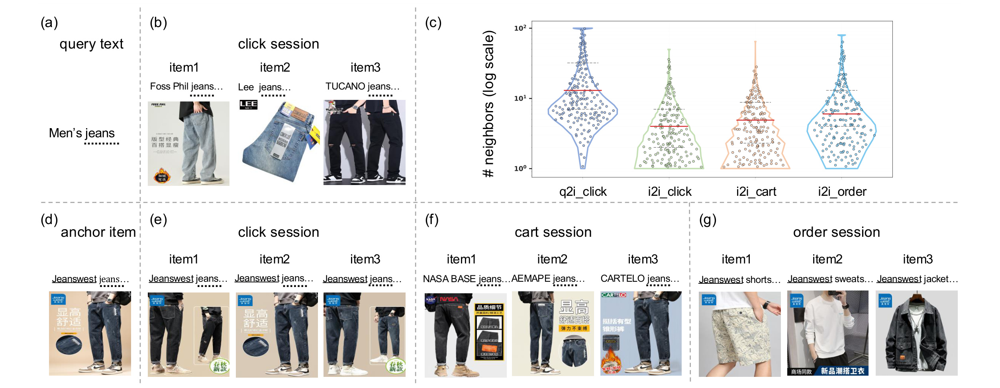
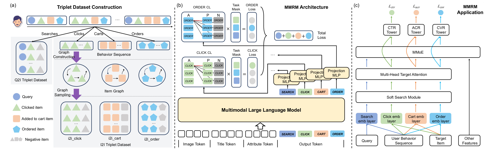
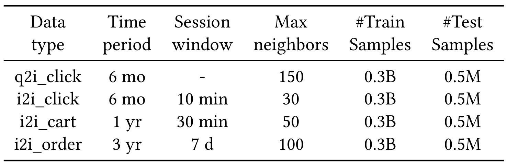
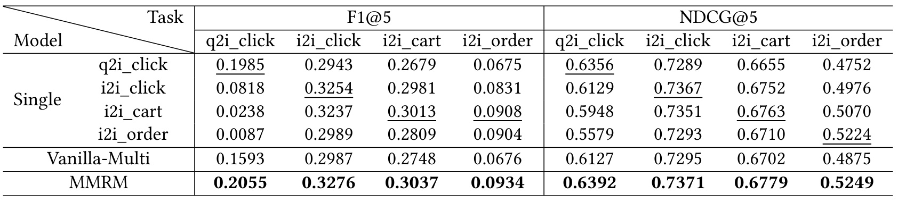
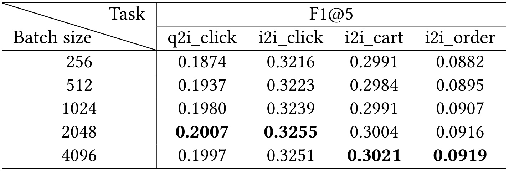
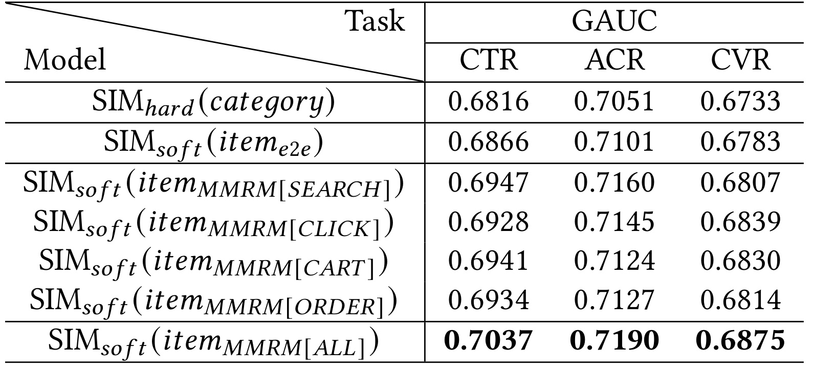

MMRM：面向电商搜索商品排序的多路多模态表示模型
英文标题：MMRM: A Multiplex Multimodal Representation Model for Product Ranking in E-commerce Search
作者：Zhen-Lin Chen、Maosen Sheng、Peng Lin、Jianmin Chen、Zhuojian Xiao、Dongyue Wang、Xiwei Zhao
机构：JD.COM，北京。第一作者及全部合作者的公开署名机构均为京东。
来源与时间：SIGIR 2026，arXiv v1 于 2026-07-13 公开。
论文入口：arXiv:2607.11030
代码与项目页：PDF 未给出独立代码或项目页；文中 DOI 在本轮核验时未能打开，因此不能把复现代码视为已公开。
这篇论文讨论一个很具体的工业链路：电商搜索已经能用多模态大模型把商品图片、标题和属性编码成向量，但这些向量怎样同时服务点击、加购、成交等不同排序目标，仍然没有被充分解决。MMRM 的答案不是再训练四套互不相干的模型，也不是让四种行为共享同一个表示，而是在共享 Qwen3-VL 骨干上引入四种任务 token 和四个投影头，一次前向得到 SEARCH、CLICK、CART、ORDER 四路商品表示；下游再用四路表示分别筛选历史行为并形成多路用户兴趣。
现有方法往往只用一种 query-to-item 或 item-to-item 协同信号微调多模态大模型，无法覆盖点击、加购与下单之间不同的相关性粒度；同时，它们通常把所得向量当作普通商品特征，未进一步用多路表示建模多任务用户意图，因而容易出现信息损失和表示纠缠。
1. 背景和问题
电商搜索排序同时面对“相关”与“偏好”两类问题。query-to-item 点击说明某个商品至少与查询语义相符，适合学习较宽泛的搜索相关性；item-to-item 行为则来自用户连续查看、加入购物车或下单的序列，越靠近成交，通常越能暴露细粒度替代、搭配或购买意图。传统 ID 表征善于吸收协同信号，却无法直接理解标题、图片、店铺、价格等商品语义，在长尾和稀疏场景中尤其受限。通用多模态大模型补上了内容理解，但若只拿一种行为监督去对齐，它学到的仍是一条被单一目标压缩过的商品空间。
论文把既有路线的第一处缺口定义为“协同信号单一”。已有工作可能选择搜索点击 q2i_click，也可能选择行为点击 i2i_click；这种设计在单任务评测上可以有效，却默认不同业务目标需要的是同一种邻域。MMRM 反对这个默认：搜索点击更接近广义相关，连续点击、加购和下单图则提供不同强度、不同时间尺度的 i2i 关系。尤其是购物车和订单信号较稀疏，却可能比普通点击更精确地表达相似、替代和互补。若把它们简单混成一份数据并共用同一个输出 token，频繁行为会支配训练，稀疏但高价值的信号也可能被平均掉。
第二处缺口在下游使用方式。很多排序模型只是把多模态向量作为额外 item feature，与 ID 特征一起做交叉；也有模型用一张向量表对长行为序列做 Soft-Search，再把筛出的历史商品送给兴趣网络。问题是 CTR、ACR、CVR 对同一段历史的关注点不必一致：查询“男士牛仔裤”时，点击历史可能说明款式偏好，购物车历史可能说明尺码或价格带，订单历史则更接近最终购买约束。若三种目标都依赖一张表示表和一份用户兴趣，表示空间会承担互相冲突的职责。论文将这种现象称为多任务场景中的信息损失与 embedding entanglement。

Figure 1 把上述矛盾落到可见样例上。上半部分从查询“Men’s jeans”出发形成 q2i 点击会话，商品可以来自不同品牌和视觉风格，说明 q2i 首先要求的是查询覆盖与宽泛相关；下半部分以某件商品为锚点，分别列出点击、加购和订单会话，越往成交链路后端，商品之间越可能表现出细粒度相似或互补。右上角的邻居数小提琴图使用对数纵轴，四种信号的分布形状与中位位置并不相同，意味着它们不能只靠一套采样阈值或一个共享输出头自然对齐。图中没有证明哪种信号绝对更好，但明确证明了“异构”不是概念包装：信号来源、会话结构和邻居统计都不同。因此 MMRM 的研究问题可以更精确地写成两问：怎样让共享多模态骨干同时吸收四种行为而不发生负迁移；又怎样把四路商品表示转化为任务特定的用户表示，而不是停留在附加特征层。
这项工作的价值也在于它打通了预训练表示与工业排序两个层次。上游评价不是只看图文检索或商品相似度，下游也不是只报告 CTR 单任务；作者分别验证四类表示的 ANN 检索质量、CTR/ACR/CVR 的 GAUC，以及一周线上 A/B 指标。这样的证据链使论文能够回答“向量更好”是否真的传导到排序目标。更重要的是，论文没有把成交信号简单当成点击信号的高权重版本，而是让每类反馈拥有独立的读出位置和下游用户兴趣，这使任务差异可以从数据一路保留到排序塔。不过，论文只有六页，许多工业细节被压缩：没有公开特征字典、流量分桶、时延预算、置信区间，也没有长尾和冷启动分组结果。阅读时应把它视作一份经过线上验证的架构报告，而不是可直接照搬的完整系统规格；其结论成立于京东搜索给定的数据、类目和日志分布，跨域可用性仍需重新实验。
2. 方法
2.1 异构协同信号与三元组数据构造
MMRM 先把四类原始行为统一成 anchor、positive、negative 三元组。q2i_click 以查询为 anchor、点击商品为 positive，并从正样本同父类目但不同子类目中随机抽 hard negative；最终数据覆盖六个月，限制每个 query 最多保留 150 个高频交互商品。i2i_click、i2i_cart、i2i_order 则先建商品图：以 i2i_click 为例，十分钟内连续点击形成边，节点频次为 (f(v_i))，转移频次为 (g(e_{ij}))。作者先过滤促销、外卖、优惠券等异常高频商品，再从一阶和二阶邻域采 positive，并在 positive 所属子类目内抽 negative。热门锚点的下采样概率为：
$$ P(v_a)=\sqrt{\frac{t}{f(v_a)}}. $$符号解释：(v_a) 是锚点商品，(f(v_a)) 是其出现频次，阈值 (t=10^{-5})。频次越高，保留概率越低，这一步防止促销爆品让对比学习只记住流行度。它只参与训练样本生成，在线推理时不再执行；这种采样也使训练分布不再等同于真实曝光分布。正样本同时考虑直接边和两跳路径：
$$ P(v_p\mid v_a)= \frac{ g(e_{ap})+\sum_{j\in B_a}g(e_{aj})g(e_{jp}) }{ \sum_{j\in B_a}g(e_{aj})+ \sum_{j\in B_a}\sum_{k\in B_j}g(e_{aj})g(e_{jk}) }. $$符号解释：(v_p) 为正商品，(B_a) 是锚点的一阶邻域；分子累加直接转移和经中间商品 (j) 到达 (p) 的两跳强度，分母在相同局部图上归一化。这样既保留直接共现，也吸收“用户先看 A，再看 B，最终看 C”形成的间接关系。每个锚点最多采 30 个正样本；cart 和 order 采用同一生成逻辑，但会话窗口与邻居上限不同。负样本在正样本子类目中按平滑频次抽取：
$$ P(v_n\mid \langle v_a,v_p\rangle,\ n\notin\{a,p\})= \frac{f(v_n)^{3/4}} {\sum_{j\in U_{s(v_p)}}f(v_j)^{3/4}}. $$符号解释：(v_n) 是负商品，(s(v_p)) 为正样本子类目，(U_{s(v_p)}) 是该子类目的商品集合。指数 (3/4) 延续 word2vec 的平滑负采样思想：既不让最热商品垄断负例，也比全局随机负例更难。这里的边界是类目质量：若子类目本身混杂或错误，所谓 hard negative 可能其实是合理替代品，训练就会制造假负例。
2.2 共享骨干与任务特定表示头
每个商品输入包含图像、标题和属性，属性可包括店铺名、价格等；query 被当作缺少图像和属性的特殊 item。模型在同一输入尾部追加 [SEARCH]、[CLICK]、[CART]、[ORDER] 四个特殊 token。共享的 Qwen3-VL-4B-Instruct 骨干一次处理多模态内容，四个 token 各自聚合与对应协同任务有关的信息，随后进入任务特定 MLP：
$$ \mathbf r_i^t=\mathrm{MLP}_t(\mathbf h_i^t), \quad t\in\{[\mathrm{SEARCH}],[\mathrm{CLICK}],[\mathrm{CART}],[\mathrm{ORDER}]\}. $$符号解释：(\mathbf h_i^t) 是商品 (i) 在任务 token (t) 位置的最后层隐藏状态，(\mathrm{MLP}_t) 是该任务独立的投影头，(\mathbf r_i^t) 是最终商品向量。核心机制是“共享内容编码，分离任务读出”：大部分参数学习通用商品语义，token 与投影头决定同一商品在搜索、点击、加购、成交四种关系中的坐标。 与训练四个独立 MLLM 相比，它减少模型副本；与 Vanilla-Multi 的共享 [EMB] token 相比，它避免所有任务争夺同一读出位置。离线生成商品库时，一次前向即可拿到四路表示，而不是运行四次单任务模型。
2.3 多任务对比学习目标
训练时四类数据均匀混合。对任务 (t) 的样本，只有同任务正对参与该任务分子的计算，task mask 屏蔽不匹配的正对；但 batch 中其他任务的商品仍然可以成为 in-batch negatives。这样既隔离正监督，又共享更大的候选比较集合。论文的任务对比损失写为：
$$ \mathcal L_{\mathrm{CL}}^t= -\frac{1}{\sum_{i=1}^{B}\mathbf 1_t(i)} \sum_{i=1}^{B}\mathbf 1_t(i) \log \frac{ \exp(\mathbf r_{i,a}^t\cdot\mathbf r_{i,p}^t/\tau_t) }{ \sum_{j=1}^{B}\exp(\mathbf r_{i,a}^t\cdot\mathbf r_{j,p}^t/\tau_t) + \sum_{j=1}^{B}\exp(\mathbf r_{i,a}^t\cdot\mathbf r_{j,n}^t/\tau_t) }. $$符号解释：(B) 是 batch size，(\mathbf 1_t(i)) 表示第 (i) 个样本是否属于任务 (t)；(\mathbf r_{i,a}^t,\mathbf r_{i,p}^t,\mathbf r_{i,n}^t) 分别是任务空间中的锚点、正例、负例向量，(\tau_t) 是任务温度。分母同时使用 batch 内正商品和显式负商品作为负例池，因此大 batch 会直接扩大比较集合。分子只拉近本任务正对，使四种关系不会因为数据混合而被当成同一个目标。四任务损失再加权求和：
$$ \mathcal L_{\mathrm{total}}^{\mathrm{CL}} =\sum_t\gamma_t\mathcal L_{\mathrm{CL}}^t. $$符号解释：(\gamma_t) 控制每个协同任务对共享骨干的贡献，实验统一取 0.25。任务均匀采样和等权损失让四类数据在训练入口相对平衡，但并不保证它们的梯度尺度完全一致；论文没有报告动态权重或梯度冲突分析。推理阶段不再需要对比损失、task mask 或负例，只保留一次前向和四个投影头。
2.4 多路用户表示与排序塔
MMRM 的第二项贡献发生在排序模型。给定 query (Q)、用户行为序列 (S)、目标商品 (I)、其他特征 (O)，系统先按任务 (t) 使用相应向量表做 Soft-Search；这一步把上游四路商品空间真正转化为四种历史筛选口径，而非简单附加特征：
$$ S_t'=\mathrm{Soft\mbox{-}Search}(S,I/Q,K,t). $$符号解释：(S_t') 是从长历史 (S) 中筛出的 top-K 子序列；CTR 等商品目标以 (I) 为检索目标，搜索相关分支可用 (Q)，参数 (t) 决定调用 SEARCH、CLICK、CART 或 ORDER 哪张 embedding table。它让不同排序目标看到不同的“相关历史”，而不是在同一份历史上只换一个输出塔。筛选后的历史进入任务特定多头目标注意力：
$$ U_t=\mathrm{MHTA}_t(S_t',I/Q,t). $$符号解释：(U_t) 是任务特定用户表示，MHTA 是 multi-head DIN 风格的目标注意力；它根据当前 query 或商品重新加权历史行为，并让相同历史在不同意图空间中产生不同贡献。四路 (U_t) 与其他特征随后进入 MMoE，并由任务塔输出预测：
$$ X_t=\mathrm{MMoE}(U_{[\mathrm{SEARCH}]},U_{[\mathrm{CLICK}]}, U_{[\mathrm{CART}]},U_{[\mathrm{ORDER}]},O,t), $$ $$ \hat y_t=\mathrm{Tower}_t(X_t,U_t). $$符号解释：(X_t) 是 MMoE 为任务 (t) 组合出的隐藏状态，(\hat y_t) 是对应 CTR、ACR 或 CVR 的预测；任务塔同时接收共享专家结果和本任务用户表示，防止多路兴趣在共享模块后再次被完全抹平，并保留直接通向任务输出的专属路径。排序目标为：
$$ \mathcal L_t^{\mathrm{rank}}= \mathrm{CrossEntropy}(y_t,\hat y_t), \qquad \mathcal L_{\mathrm{total}}^{\mathrm{rank}}= \sum_{t\in\{\mathrm{ctr},\mathrm{acr},\mathrm{cvr}\}} \lambda_t\mathcal L_t^{\mathrm{rank}}. $$符号解释：(y_t) 是任务标签，(\lambda_t) 是任务损失权重，实验统一取 0.33。训练时优化三个任务的交叉熵；在线推理时沿用四张向量表、Soft-Search、MHTA、MMoE 和三个塔，但不再运行上游 MLLM，商品向量应已离线写入表中。这一点使 4B 模型的成本主要落在离线更新，而不是每次搜索请求。

Figure 2 的三段恰好对应完整信号流。左侧先把搜索、点击、加购、订单会话转成 q2i 或 i2i 三元组，说明四任务共享的是样本接口而不是邻域语义；中间四类样本进入同一多模态骨干，task mask 选择相应对比损失，四个 token 再经独立 Projection MLP 输出 SEARCH、CLICK、CART、ORDER 表示；右侧四张 embedding table 同时接收 query、用户序列与目标商品，经过 Soft-Search 和 Multi-Head Target Attention 形成多路兴趣，再由 MMoE 和 CTR/ACR/CVR 塔完成预测。训练与推理的差别也能从图中读出：中间的 contrastive loss 只负责离线表示学习，线上排序只消费固化的四路向量。该设计的工程取舍是以多张向量表和多路注意力的存储、更新成本，换取共享骨干的一次离线推理与更清晰的任务分工。
3. 实验结果
3.1 数据、指标与训练设置
表示学习使用四类工业数据。每类都有 0.3B 训练三元组和 0.5M 留出测试样本，但行为时间范围不同：q2i_click 与 i2i_click 覆盖六个月，i2i_cart 覆盖一年，i2i_order 覆盖三年；会话窗口分别为无固定窗口、10 分钟、30 分钟和 7 天，最大邻居数为 150、30、50、100。更长的订单窗口不是简单“数据更多”，而是对成交稀疏性的补偿。四个测试集先生成商品向量，再做 ANN 检索，以 F1@k 衡量召回集合质量，以 NDCG@k 衡量结果排序质量。

Table 1 的关键不是四行样本量都很大，而是“相同 0.3B”背后的采样口径差异。q2i_click 六个月即可达到规模，说明搜索点击密集，且每个 query 可保留 150 个交互商品；i2i_order 要回看三年并允许 7 天会话窗，才能构造足够关系。四类测试集都固定为 0.5M，便于横向对比 F1@5 和 NDCG@5，却不能消除任务难度差异：order 的绝对 F1 明显低于 click，不能据此断言订单表示更差。复现时还需知道去重、类目版本、图构建频率和负例污染率，而论文未披露这些细节。
MMRM 初始化自 Qwen3-VL-4B-Instruct，除视觉编码器外训练其余参数；表示训练采用 Adam、学习率 (2\times10^{-5})、GradCache 下 batch size 2048、FlashAttention-2，任务温度 (\tau_t=0.05)，任务权重 (\gamma_t=0.25)。排序模型使用 AdamW、学习率 (3\times10^{-5})、batch size 4096，三个任务权重 (\lambda_t=0.33)。论文写明全部模型在 8 张 NVIDIA H800 上训练；在 batch 消融中，GradCache 还使 4B 模型能够在单台 H800 机器上扩到 4096，但“单台机器”没有进一步说明卡数配置。
排序实验来自连续八天京东搜索日志：前七天 4B 样本训练，最后一天 2M 样本测试，指标为 GAUC。表示模型基线包括四个 Single 单任务模型、任务特定 prompt 但共享 [EMB] token 的 Vanilla-Multi，以及任务 token 分离的 MMRM；排序基线从按类目 hard filter，逐步过渡到端到端商品向量 Soft-Search、单路 MMRM 表 Soft-Search，最后是四路 MMRM 用户表示。这个阶梯设计能够分别观察“软筛选”“多模态向量”和“多路用户表示”的增量。
3.2 表示模型主结果

Table 2 给出八个离线指标，MMRM 全部最佳。与 Vanilla-Multi 相比，MMRM 的 F1@5 在 q2i_click、i2i_click、i2i_cart、i2i_order 上分别从 0.1593、0.2987、0.2748、0.0676 提升到 0.2055、0.3276、0.3037、0.0934，绝对增加 0.0462、0.0289、0.0289、0.0258；对应 NDCG@5 从 0.6127、0.7295、0.6702、0.4875 提升到 0.6392、0.7371、0.6779、0.5249。这个差距说明仅用不同 prompt 但共用 [EMB] token 并不能可靠分离任务，尤其 q2i 和 order 受到的影响最大。
更严格的比较是与各列最好的 Single 模型相比。MMRM 的 F1@5 绝对领先幅度只有 0.0070、0.0022、0.0024、0.0026，NDCG@5 领先 0.0036、0.0004、0.0016、0.0025，优势明显小于相对 Vanilla-Multi 的差距。这表明共享骨干没有靠大幅牺牲某个任务换取平均收益，但论文真正证明的是“小幅统一超过四个专用模型”，而不是数量级改进。作者推测混合任务带来更多样的 in-batch negatives，也是增益来源之一；因此任务 token 解耦、负例池扩大与训练数据多样性在现有实验中没有被完全拆开。
单任务模型的交叉任务表现进一步支持异构性。例如 q2i_click 单任务在本列 F1@5 为 0.1985，却在 i2i_order 只有 0.0675；i2i_order 单任务在 order NDCG@5 达到 0.5224，却在 q2i_click NDCG@5 只有 0.5579。换言之，搜索相关空间与成交关系空间确实不等价。Vanilla-Multi 甚至在多列低于对应 Single，展示共享输出表示的负迁移；MMRM 的四个 token 与投影头恰好针对这个失败模式。
3.3 Batch size、GradCache 与消融边界

Table 3 从 256 扩到 4096。q2i_click F1@5 由 0.1874 升至 2048 时的 0.2007，4096 略降到 0.1997；i2i_click 从 0.3216 升至 0.3255 后也略降为 0.3251。i2i_cart 在 4096 达到 0.3021，i2i_order 达到 0.0919，二者仍保持上升。因而“大 batch 一致带来更好表现”应理解为总体趋势，而不是每个任务严格单调。超过 1024 的设置使用 GradCache，而且为了加速省略图像，这又引入了输入模态变化；表中无法单独量化 batch、缓存策略和去图像三者各自的贡献。
GradCache 的意义在于把对比损失反向传播拆成两个阶段和更小的子更新，扩大 in-batch negative 池而不线性占用显存。对 MMRM 而言，这一点尤其重要，因为四任务混合后其他任务商品也参与负例分母。工程上应关注两个风险：一是大 batch 的通信和缓存开销是否抵消一次前向生成四路表示的收益；二是 batch 中可能出现真实相关商品被当作负例，规模越大，假负例概率也可能提高。论文没有报告训练吞吐、峰值显存、收敛时长或不同任务的梯度相似度，因此效率结论主要落在“一个模型一次生成四路向量”，还不足以还原总体训练成本。
3.4 排序模型、线上 A/B 与证据强度

Table 4 展示从单表到四路表的传导。类目 hard filter 的 CTR/ACR/CVR GAUC 为 0.6816/0.7051/0.6733；端到端商品向量 Soft-Search 提升到 0.6866/0.7101/0.6783，先证明软检索优于硬类目。把筛选表换成单路 MMRM 后，三个任务进一步改善，但最佳单路并不相同：SEARCH 在 CTR 与 ACR 上较强，CLICK 在 CVR 上达到 0.6839。这与四种协同信号面向不同意图的假设一致，也说明不能预先规定 ORDER 表必然最适合 CVR。
四路 (item_{\mathrm{MMRM[ALL]}}) 配置达到 0.7037/0.7190/0.6875，相对线上端到端单表基线的绝对增量为 0.0171/0.0089/0.0092，并且同时高于所有单路配置。这里的关键不是把四张向量直接拼到商品侧，而是每一路先筛历史、再经任务特定 MHTA 形成 (U_t)，最后共同进入 MMoE。表格因此验证了论文第二项贡献：multiplex item representation 的价值可以通过 multiplex user representation 传到下游，而非只停留在 ANN 检索。
论文还报告一周线上 A/B：相对 (SIM_{\mathrm{soft}}(item_{e2e})) 基线，UCTR、UACR、UCVR 分别提升 0.42%、0.37%、0.35%，并称系统已全量部署，服务数百万日活用户。作者指出在巨大流量下 0.10% 的变化也有显著收入价值，但正文没有给出实验流量比例、随机化单元、方差、置信区间、显著性检验、护栏指标或延迟变化。可以确认的是三个漏斗指标同向改善；不能从六页论文确认的是增益是否在新老用户、长尾 query、类目和价格带上均匀，也不能排除曝光策略改变对后链路指标的影响。
综合四张表，证据链相对完整：Table 2 证明四路表示在各自检索任务上有效，Table 3 说明大负例池影响效果，Table 4 证明多路表示进入用户建模后改善三任务 GAUC，线上 A/B 再给出真实业务指标。但缺少两个关键对照：其一是“四个独立单任务模型 + 四路用户表示”与 MMRM 的端到端成本效果对照，其二是“共享骨干、共享 token、独立投影头”和“共享骨干、独立 token、共享投影头”的结构消融。没有这两组实验，task token 与投影头各自贡献仍无法分离。
4. 总结
4.1 我的判断
MMRM 最扎实的贡献是把“多模态商品表示”从一张辅助特征表推进为一组有业务语义的表示接口。SEARCH、CLICK、CART、ORDER 四路向量既共享内容骨干，又保留协同目标差异；下游再用它们生成四路用户兴趣，形成从样本构造、表示学习到排序消费的闭环。离线结果表明它能统一超过四个单任务模型，排序和线上结果又说明改进没有停在表示指标。对工业系统而言，一次离线前向生成四路向量比维护四个完整 MLLM 更有吸引力，而 task-specific user representation 则比简单拼接四路商品向量更有解释力。
这项设计也可迁移到推荐与个性化大模型：不同反馈强度不应被压成单一用户 embedding，可以让任务 token 表达浏览、收藏、购买等关系，再由目标条件注意力形成多路记忆；在 RAG 或 Agent 中，也可把“语义相关”“近期点击”“高承诺行为”分成不同检索空间。不过，迁移前必须验证每一路行为是否真的具有稳定语义，不能把所有事件类型机械映射成 token。
4.2 局限与后续跟进
主要局限至少有四点。第一，数据、类目体系、特征与代码均未公开，0.3B 三元组的清洗和假负例率无法复核。第二，结构消融不足，尚不能区分任务 token、独立投影头、多样 in-batch negatives 各自贡献。第三，论文没有公开训练总时长、向量表大小、更新频率、在线 P99 时延和资源增量，一次 MLLM 推理高效不等于全链路成本低。第四，线上 A/B 缺少置信区间、流量分层和护栏指标，且没有冷启动、长尾、类目、公平性或鲁棒性切片。第五，所有证据来自单一京东搜索场景，能否外推到推荐流、广告或跨平台数据仍未知。
后续最值得做三类验证。其一，补齐 2×2 结构消融，分别控制 token 与 projection head 是否共享，并保持 batch 和负例池一致，确认解耦机制本身的贡献。其二，在同等 GPU 时和向量存储预算下，对比四个单任务 MLLM、MMRM 四路表与压缩后的共享表，测量训练吞吐、离线更新、检索延迟和 GAUC，建立真实成本曲线。其三，按 query 频次、商品冷启动程度、类目和行为稀疏度切分离线与线上指标，并审计同子类 hard negative 的误标率。若这三项结果仍稳定，MMRM 才能从“京东已验证的有效架构”进一步成为可复用的多行为多模态排序范式。